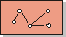
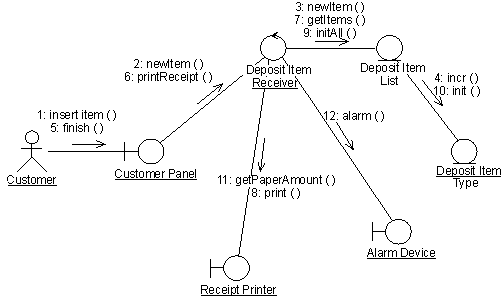

Artifacts >
Artifacts >
 Analysis & Design Artifact Set >
Analysis & Design Artifact Set >
 Design Model... >
Design Model... >
 Design Model >
Design Model >
 Guidelines >
Collaboration Diagram
Guidelines >
Collaboration Diagram
Artifacts >
Analysis & Design Artifact Set >
Design Model... >
Design Model >
Guidelines >
Collaboration Diagram
Guidelines:
|
|
 Collaboration Diagram |
A collaboration diagram describes a pattern of interaction among objects; it shows the objects participating in the interaction by their links to each other and the messages that they send to each other. |
Collaboration diagrams are used to show how objects interact to perform the behavior of a particular use case, or a part of a use case. Along with sequence diagrams, collaborations are used by designers to define and clarify the roles of the objects that perform a particular flow of events of a use case. They are the primary source of information used to determining class responsibilities and interfaces.
Unlike a sequence diagram, a collaboration diagram shows the relationships among the objects. Sequence diagrams and collaboration diagrams express similar information, but show it in different ways. Collaboration diagrams show the relationships among objects and are better for understanding all the effects on a given object and for procedural design.
Because of the format of the collaboration diagram, they tend to better suited for analysis activities (see Activity: Use-Case Analysis). Specifically, they tend to be better suited to depicting simpler interactions of smaller numbers of objects. As the number of objects and messages grows, the diagram becomes increasingly hard to read. In addition, it is difficult to show additional descriptive information such as timing, decision points, or other unstructured information that can be easily added to the notes in a sequence diagram.
You can have objects and actor instances in collaboration diagrams, together with links and messages describing how they are related and how they interact. The diagram describes what takes place in the participating objects, in terms of how the objects communicate by sending messages to one another. You can make a collaboration diagram for each variant of a use case's flow of events.

A collaboration diagram that describes part of the flow of events of the use case Receive Deposit Item in the Recycling-Machine System.
An object is represented by an object symbol showing the name of the object and its class underlined, separated by a colon:
objectname : classname
You can use objects in collaboration diagrams in the following ways:
Normally an actor instance occurs in the collaboration diagram, as the invoker of the interaction. If you have several actor instances in the same diagram, try keeping them in the periphery of the diagram.
Links are defined as follows:
A message is a communication between objects that conveys information with the expectation that activity will ensue. In collaboration diagrams, a message is shown as a labeled arrow placed near a link. This means that the link is used to transport, or otherwise implement the delivery of the message to the target object. The arrow points along the link in the direction of the target object (the one that receives the message). The arrow is labeled with the name of the message, and its parameters. The arrow may also be labeled with a sequence number to show the sequence of the message in the overall interaction. Sequence numbers are often used in collaboration diagrams, because they are the only way of describing the relative sequencing of messages.
A message can be unassigned, meaning that its name is a temporary string that
describes the overall meaning of the message. You can later assign the message
by specifying the operation of the message's destination object. The specified
operation will then replace the name of the message.
|
Rational Unified
Process
|